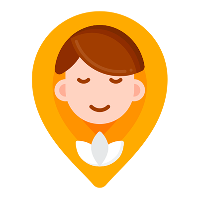
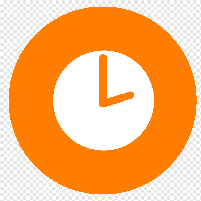

Александра Дубинкина
Арт-терапевт
(арт-терапевтическая студия Sasha Sham)
Здесь Вас поймут: Ваша жизнь может быть лучше! Любая проблема имеет решение!

Добро пожаловать на мой сайт!
| Конфиденциальность | |
| Всё сказанное Вами на сеансах является тайной | |
|  | Ваш комфорт |
| Терапия проходит в удобное для Вас время с использованием различных методик и техник | |
 |
Упор на качество |
| Терапия продолжается до решения проблемы или когда Вы сами решите закончить |
Меня зовут Александра Дубинкина, я арт-терапевт.
Живу в Витебске, имею свою студию по арт-терапии. Увлекаюсь творчеством, культурой разных стран, публикациями в сфере психологии, педагогики, языкознания.
Занимаюсь гармонизацией и коррекцией психического состояния детей и взрослых через развитие способности самовыражения и самопознания с применением изобразительного творчества
Формат работы:
- провожу индивидуальные и групповые психологические консультации посредством арт-терапии;
- психологические арт-игры;
- арт-встречи (девичники, свидания, дни рождения) на русском и английском языках (для иностранной аудитории)
Рекомендации для посещения моей арт-студии:
- у Вас есть конкретная проблема, которую Вы хотите решить, но не понимаете, как это сделать самостоятельно;
- преобладает желание глубже разобраться в себе (стиль жизни, ценности, желания, цели и др.);
- проблемная ситуация повторяется систематически (связь с Вашей личностью, темпераментом, моделями поведения, травмами и др.);
- задумались о развитии Вашего творческого потенциала и креативного времени препровождения и др.
 |
Личность ребенка |
| Минимизация трудностей поведения и коммуникации, повышение адаптивности в меняющемся мире, концентрация на чувствах, подтверждение индивидуальности | |
| Отношения | |
| Научитесь ценить себя с партнёром, друзьями, говорить "нет" без угрызения совести | |
| Стресс | |
| Выявим причины беспокойств, волнений, переживаний, тревожности и способы с этим справиться | |
| Материнство | |
| Обретёте покой, любовь, счастье в статусе мамы | |
| Эмоциональная нестабильность | |
| Убережёте себя от раздражителей и постоянной смены настроения | |
| Самооценка | |
| Поймёте, как заботиться о себе, быть уверенным, добиться цели | |
 |
Креативность |
| Разовьёте навыки творческого подхода в решении жизненных ситуаций, приобщитесь к эстетике и много другое |
|  | Продолжительность консультации: |
| Первая консультация - 1 час | |
| Каждая последующая - 50 минут | |
 |
Стоимость: |
| Первая консультация - 15$ | |
| Каждая последующая - 25$ | |
| Место проведения: | |
| г. Витебск, пр-т Строителей 11/А "Омега", этаж Х, комната ХХХ | |
 |
У вас остались вопросы или вы хотите написать отзыв: |
| Звоните: +375298157831 | |
| Пишите: sandrad88@mail.ru |
Отзывы
Обращение к арт-терапевту было чрезвычайно полезным и вдохновляющим опытом.
С первого сеанса я почувствовал внимание и заботу со стороны терапевта.
В процессе арт-терапии я смог выразить свои эмоции и чувства через творчество,
что оказалось удивительно освобождающим и целительным.
Арт-терапевт профессионально и чутко подходил к каждому сеансу,
помогая мне открывать новые стороны себя и глубже понимать свои внутренние переживания.
Внимательное и ненавязчивое руководство арт-терапевта помогло мне исследовать
мои эмоции и справляться с ними более конструктивно.
Каждое занятие было продумано до мелочей и имело свою уникальную атмосферу,
что способствовало созданию комфортной и доверительной обстановки.
Я очень благодарен за это замечательное путешествие внутрь себя и
возможность научиться новым способам самовыражения и самопознания.
Рекомендую всем, кто ищет эффективный способ разобраться в своих чувствах и эмоциях,
обратиться к этому арт-терапевту. Это действительно стоит того!
Терапевт мастерски использовал различные арт-техники, помогая мне выражать те эмоции,
которые было трудно выразить словами. Это позволило мне глубже понять свои
внутренние переживания и найти новые способы их обработки. Особенно впечатлило,
как искусство может быть таким мощным инструментом для личностного роста и самовыражения.